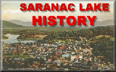
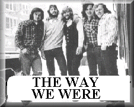
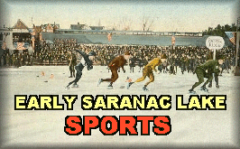
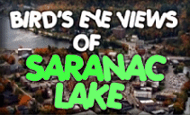
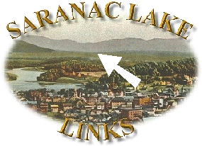

OVER 2,000 SARANAC LAKE IMAGES ON 85 PAGES --- AND STILL GROWING!












CAUTION: READING THE WATERFRONT REVITALIZATION PROJECT IN IT'S ENTIRETY MAY CAUSE PERMANENT BRAIN DAMAGE!!
NOTE: In the Adirondack Chronology there is a mention of a moose being shot at Saranac Lake in 1965 and entered in the Trudeau Big Buck Contest. The writers were taken in by a prank in the Adirondack Daily Enterprise perpetuated by Bill McLaughlin. Below is a link to that photo of Bob Liddy with a moose he shot in Canada!

DO YOU FEEL WE'RE BEING WATCHED? WHAT IS THAT TRAFFIC LIGHT ON THE TOWN HALL?

My ol' buddy, pianist, composer, arranger, raconteur and music educator Phil Klein has kindly agreed to jot down his early memories of life in Saranac Lake for the site. Here they are and more to come!
PHIL KLEIN'S RAMBLIN' PROSE


 REMEMBER THE SARANAC LAKE / KATRINA CONNECTION OF AUGUST 2005?
HERE ARE THE DRAMATIC EMAILS PLUS AN AMAZING TELEVISION INTERVIEW WITH SARANAC LAKERS AFFECTED BY KATRINA.
REMEMBER THE SARANAC LAKE / KATRINA CONNECTION OF AUGUST 2005?
HERE ARE THE DRAMATIC EMAILS PLUS AN AMAZING TELEVISION INTERVIEW WITH SARANAC LAKERS AFFECTED BY KATRINA.
THINK LIFE WAS BORING IN SARANAC LAKE IN THE DAYS OF YORE?---WRONG!!!
TAKE A GLANCE BACK THROUGH THE "REAR VIEW" MIRROR AND READ ABOUT THE BOOTLEGGERS, MURDERERS, PIRATES AND DISASTERS OF SARANAC LAKE!